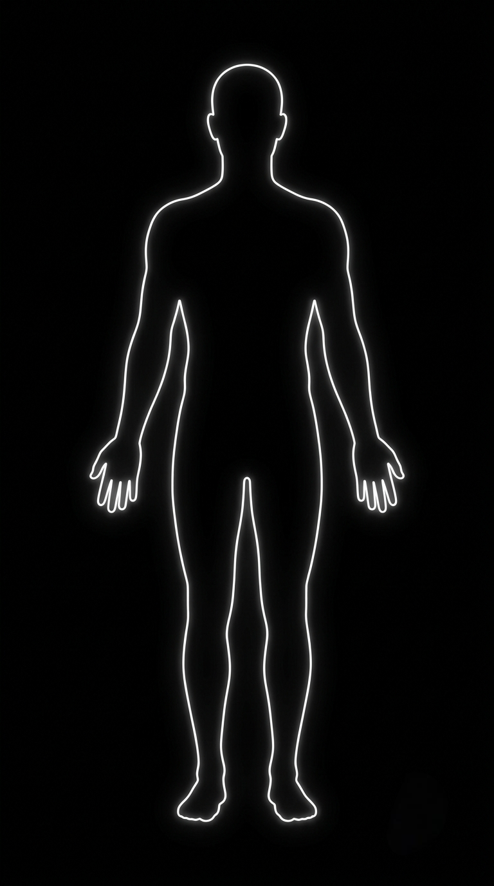

Practitioner Reviews
"The balanced hand feel and tolerances of their micro-retractors provide superior reliability."
Years of Metallurgy Heritage
Device Blueprints Cataloged
1998 Institutional Compliance
2014 Production Quality Directives
Hover over individual classifications to expand item descriptions while forcing alternative cards to smoothly step back and hide inside the stack.
Premium micro-canal retractors, self-retaining scalp stabilizers, and dural access tools forged for delicate cranial procedures.
High-tensile sternal spreaders, pediatric rib retractors, and micro-vascular tissue forceps built for extreme durability.
Heavy-duty Liston bone cutting pliers, high-torque bone awls, wire tighteners, and custom articulation instrumentation sets.
Ultra-slender insulation-verified shafts optimized for laparoscopic tissue dissection, arthroscopy, and fine sinoscopy.
Click target coordinates across the anatomy silhouette outline model to resolve mapped localized device databases instantly.

"The balanced hand feel and tolerances of their micro-retractors provide superior reliability."
Access your configurations and procurement lists.
Access root registers, design data sheets, and logs tracking updates.
Welcome. Specify an equipment classification query or SKU to verify design applications instantly.